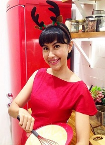

Chef Terbaik Kami
Di Indonesia, Juna sempat dipercaya beberapa kali menjadi juri ajang kompetisi memasak seperti Master Chef Indonesia dan Hell’s Kitchen Indonesia. Pria asal Manado ini juga sempat menjadi executive chef di restoran Jack Rabbit Jakarta, tapi Juna memilih untuk mengundurkan diri tahun 2011.

Putri Miranti merupakan penggemar berat makanan penutup atau dessert, yang akhirnya membuat chef mungil ini fokus dalam masakan yang berbau pastry. Sosoknya yang feminim, ternyata menular ke kreasi masakannya yang cantik dan juga menggugah selera.
Reynold merupakan orang Indonesia pertama yang berhasil menjadi salah satu peserta Master Chef Australia.
Dia dilahirkan pada 19 November 1966 dan dibesarkan di Jamaika, Queens. Pengalaman kulinernya dimulai ketika dia berusia sebelas tahun di dapur ibunya sendiri. Pada usia 16 tahun, DiSpirito belajar di Culinary Institute of America, Hyde Park untuk mengasah kemampuan kulinernya.